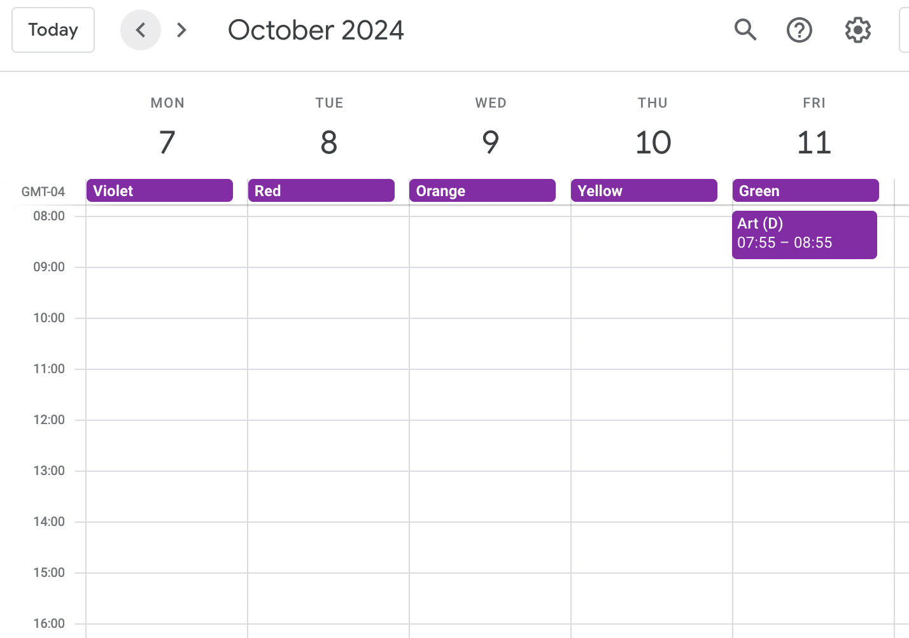
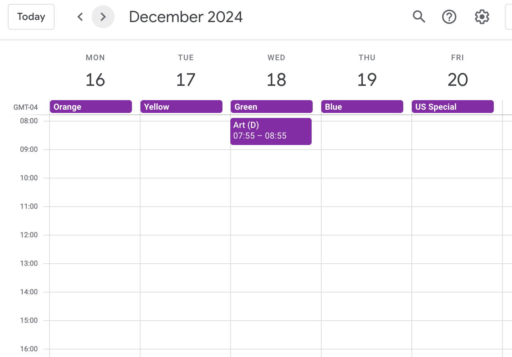
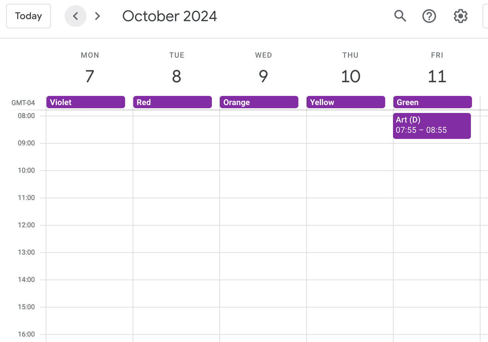
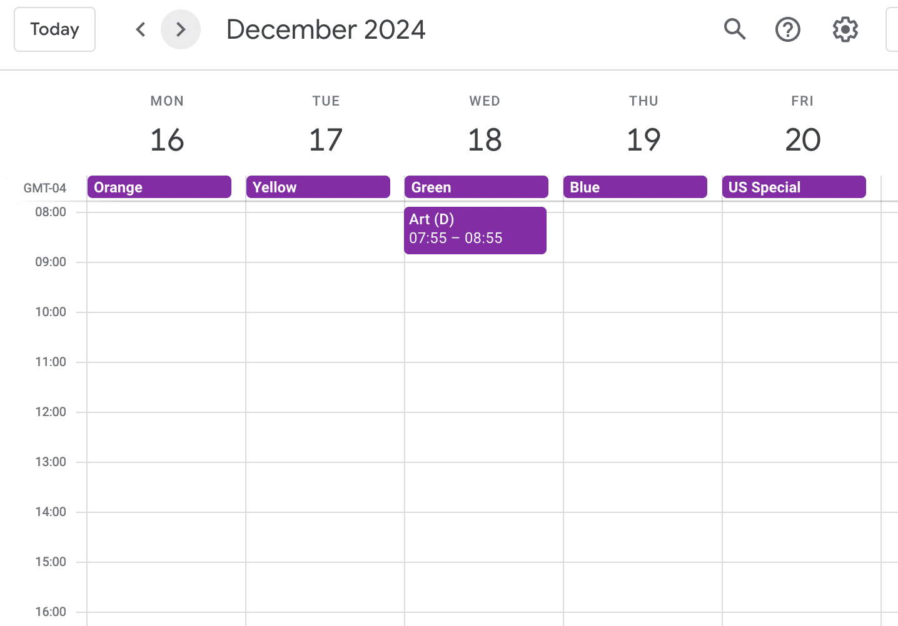

Cyclone
CycloneOperating on a 6, 7, or 10 day calendar cycle can offer many benefits. Calendar managment isn’t one of them.
Google Calendar is designed to help you manage events that repeat on a Monday - Friday schedule. If you're working with different rules for recurring events, scheduling meetings with Google Calendar can be a nightmare.


 


